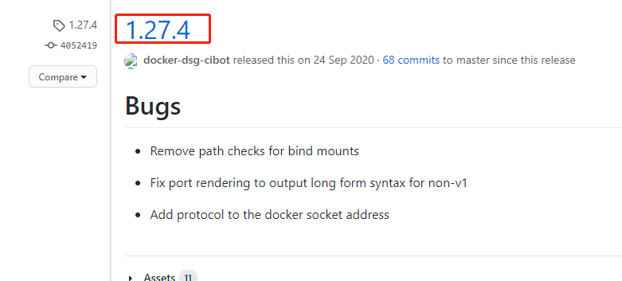

003-docker在Linux安装compose
安装docker-compose
- 查看稳定版本
到官网查看下现有的版本。我们以
1.27.4为例子

- 执行命令
国外的镜像:
sudo curl -L "https://github.com/docker/compose/releases/download/1.27.4/docker-compose-$(uname -s)-$(uname -m)" -o /usr/local/bin/docker-compose
上面命令的意思是: 把指定的链接下载然后用存到指定的管道中，
uname -s和uname -m是Linux上的命令，查看当前是什么系统以及版本号/usr/local/bin/是Linux上存全局命令的地方，这样子就在任何文件夹中都可以执行docker了
国内的镜像:
sudo curl -L "https://get.daocloud.io/docker/compose/releases/download/1.27.4/docker-compose-$(uname -s)-$(uname -m)" -o /usr/local/bin/docker-compose
- 执行命令
docker-compose有看到内容就是安装完成